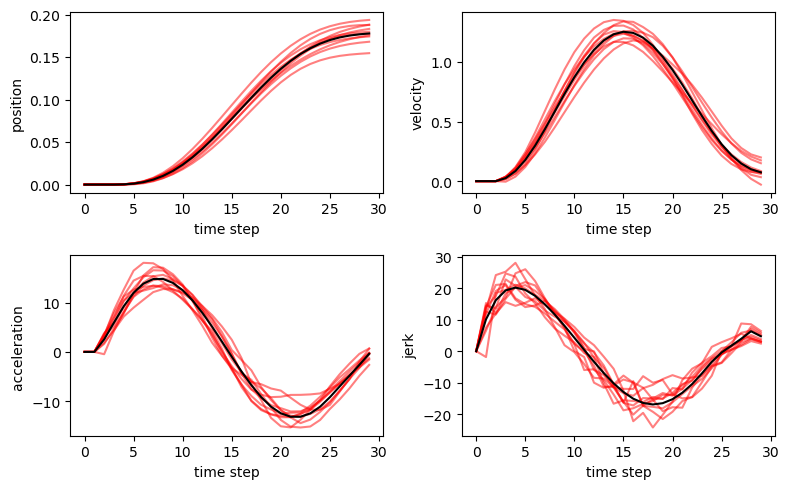

13.3 最適フィードバック制御モデル (optimal feedback control; OFC)¶
13.3.1 最適フィードバック制御モデルの構造¶
Todorov, E. (2005) Stochastic optimal control and estimation methods adapted to the noise characteristics of the sensorimotor system. Neural Computation 17(5): 1084-1108
目標軌道を必要としない．Kalman filterによる状態推定と推定された状態に基づいて運動指令を生成
Compute optimal controller and estimator for generalized LQG
\[\begin{split}
\begin{align}
u(t) &= -L(t) x(t)\\
x(t+1) &= A x(t) + B (I + \sum(C(i) rnd_1)) u(t) + C0 rnd_n\\
y(t) &= H x(t) + \sum (D(i) rnd_1) x(t) + D0 rnd_n\\
\hat{x}(t+1) &= A \hat{x}(t) + B u(t) + K(t) (y(t) - H \hat{x}(t)) + E0 rnd_n\\
x(1) &\sim mean X1, covariance S1\\
\end{align}
\end{split}\]
\[
cost(t) = u(t)' R u(t) + x(t)' Q(t) x(t)
\]
13.3.2 最適フィードバック制御モデルの実装¶
ライブラリの読み込み．
using LinearAlgebra
using Random
using PyPlot
eye(T::Type, n) = Diagonal{T}(I, n)
eye(n) = eye(Float64, n)
eye (generic function with 2 methods)
function convertScalar2Vec!(C, D, C0, D0, E0)
szX = size(A,1);
szU = size(B,2);
szY = size(H,1);
# if C or D are scalar, replicate them into vectors
if size(C,1)==1 #&& szU>1
C = C*ones(szU,1)
end
if length(D)==1
if D[1]==0
D = zeros(szY, szX)
else
D = D*ones(szX,1)
if szX != szY
error("D can only be a scalar when szX = szY")
end
end
end
# if C0,D0,E0 are scalar, set them to 0 matrices and adjust size
if length(C0)==1 && C0[1]==0
C0 = zeros(szX,1)
end
if length(D0)==1 && D0[1]==0
D0 = zeros(szY,1)
end
if length(E0)==1 && E0[1]==0
E0 = zeros(szX,1);
end
return C, D, C0, D0, E0
end
convertScalar2Vec! (generic function with 1 method)
NSim : number of simulated trajectories (default 0) (optional)
Init : 0 - open loop; 1 (default) - LQG; 2 - random (optional)
Niter : iterations; 0 (default) - until convergence (optional)
K : Filter gains
L : Control gains
Cost : Expected cost (per iteration)
Xa : Expected trajectory
XSim : Simulated trajectories
CostSim : Empirical cost
function gLQG(A, B, C, C0, H, D, D0, E0, Q, R, X1, S1; Init=1, Niter=0, MaxIter=500, Eps=10^-8)
# determine sizes
szX = size(A,1);
szU = size(B,2);
szY = size(H,1);
szC = size(C,3);
szC0 = size(C0,2);
szD = size(D,3);
szD0 = size(D0,2);
szE0 = size(E0,2);
N = size(Q,3);
# initialize policy and filter
K = zeros(szX,szY,N-1) # Filter gains
L = zeros(szU,szX,N-1) # Control gains
Cost = zeros(MaxIter)
for iter = 1:MaxIter
# initialize covariances
SiE = S1
SiX = X1 * X1'
SiXE = zeros(szX,szX)
for k = 1:N-1
# compute Kalman gain
temp = SiE + SiX + SiXE + SiXE'
if size(D,2)==1
DSiD = Diagonal((diag(temp).*D.^2)[:, 1])
else
DSiD = zeros(szY,szY);
for i=1:szD
DSiD += D[:,:,i] * temp * D[:,:,i]'
end
end
K[:,:,k] = A * SiE * H' * pinv(H * SiE * H' + D0 * D0' + DSiD)
# compute new SiE
newE = E0 * E0' + C0 * C0' + (A - K[:,:,k] * H) * SiE * A'
LSiL = L[:,:,k] * SiX * L[:,:,k]'
if size(C,2)==1
newE += B * Diagonal(diag(LSiL) .* C.^2) * B'
else
for i=1:szC
newE += B*C[:,:,i] * LSiL * C[:,:,i]'*B'
end
end
# update SiX, SiE, SiXE
AmBL = A - B * L[:,:,k]
SiX = E0 * E0' + K[:,:,k] * H * SiE * A' + AmBL * SiX * AmBL' + AmBL * SiXE * H' * K[:,:,k]' + K[:,:,k] * H * SiXE' * AmBL'
SiE = newE
SiXE = AmBL * SiXE * (A - K[:,:,k]*H)' - E0 * E0'
end
# first pass initialization
if iter==1
if Init==0 # open loop
K = zeros(szX,szY,N-1)
elseif Init==2 # random
K = randn(szX,szY,N-1)
end
end
# initialize optimal cost-to-go function
Sx = Q[:,:,N]
Se = zeros(szX,szX)
Cost[iter] = 0
# backward pass - recompute control policy
for k=N-1:-1:1
# update Cost
Kk = K[:,:,k]
Cost[iter] = Cost[iter] + tr(Sx*C0*C0') + tr(Se * (Kk * D0 * D0' * Kk' + E0 * E0' + C0 * C0'))
# Controller
temp = R .+ B' * Sx * B
BSxeB = B' * (Sx + Se) * B
if size(C,2)==1
temp += Diagonal(diag(BSxeB).*C.^2)
else
for i=1:size(C,3)
temp += C[:,:,i]' * BSxeB * C[:,:,i]
end
end
L[:,:,k] = pinv(temp)*B'*Sx*A;
Lk = L[:,:,k]
# compute new Se
newE = A' * Sx * B * Lk + (A - Kk * H)'*Se*(A - Kk * H);
# update Sx and Se
Sx = Q[:,:,k] + A' * Sx * (A - B * Lk);
KSeK = Kk' * Se * Kk;
if size(D,2)==1
Sx += Diagonal(diag(KSeK).*D.^2)
else
for i=1:szD
Sx += D[:,:,i]'*KSeK*D[:,:,i]
end
end
Se = newE;
end
# adjust cost
Cost[iter] += (X1' * Sx * X1)[1] + tr((Se + Sx) * S1)
# check convergence of Cost
if iter > 1
CostError = abs(Cost[iter-1]-Cost[iter])
if (Niter>0 && iter>=Niter) || (Niter==0 && CostError < Eps)
# print result
if Cost[iter-1]!=Cost[iter]
println("Log10DeltaCost = ", log10(CostError))
else
println("DeltaCost = 0")
end
break
end
end
end
return K, L, Cost
end
gLQG (generic function with 1 method)
# 軌跡の平均を計算
function computeAverageTrajectory(A, B, X1, L, N)
szX = size(A,1)
Xa = zeros(szX,N)
Xa[:,1] = X1
for k=1:N-1
u = -L[:,:,k] * Xa[:,k]
Xa[:,k+1] = A * Xa[:,k] + B * u
end
return Xa
end
computeAverageTrajectory (generic function with 1 method)
# simulate noisy trajectories
function simulateNoisyTrajectories(A, B, C, C0, H, D, D0, E0, Q, R, X1,S1, L, K, NSim)
szX = size(A,1);
szU = size(B,2);
szY = size(H,1);
szC0 = size(C0,2);
szD = size(D,3);
szD0 = size(D0,2);
szE0 = size(E0,2);
N = size(Q,3);
# square root of S1
u, s, v = svd(S1)
sqrtS = u * sqrt(Diagonal(s)) * v'
# initialize
XSim = zeros(szX,NSim,N)
Xhat = zeros(szX,NSim,N)
Xhat[:,:,1] = repeat(X1, 1, NSim)
XSim[:,:,1] = Xhat[:,:,1] + sqrtS * randn(szX,NSim);
CostSim = 0
# loop over N
for k=1:N-1
# update control and cost
U = -L[:,:,k] * Xhat[:,:,k]
CostSim += sum(sum(U.*(R*U))) + sum(sum(XSim[:,:,k].*(Q[:,:,k]*XSim[:,:,k])))
# compute noisy control
Un = copy(U)
if size(C,2)==1
Un += U .* randn(szU,NSim) .* repeat(C, 1, NSim)
else
for i=1:szC
Un += (C[:,:,i]*U) .* repeat(randn(1,NSim), szU, 1)
end
end
# compute noisy observation
y = H*XSim[:,:,k] + D0 * randn(szD0,NSim)
if size(D,2)==1
y += XSim[:,:,k] .* randn(szY,NSim) .* repeat(D, 1,NSim)
else
for i=1:szD
y += (D[:,:,i] * XSim[:,:,k]).*repeat(randn(1,NSim), szY, 1)
end
end
XSim[:,:,k+1] = A*XSim[:,:,k] + B*Un + C0*randn(szC0,NSim);
Xhat[:,:,k+1] = A*Xhat[:,:,k] + B*U + K[:,:,k] * (y - H * Xhat[:,:,k]) + E0*randn(szE0,NSim);
end
# final cost update
CostSim += sum(sum(XSim[:,:,N].*(Q[:,:,N]*XSim[:,:,N])));
CostSim /= NSim
return XSim, CostSim
end
simulateNoisyTrajectories (generic function with 1 method)
function kalman_lqg(A, B, C, C0, H, D, D0, E0, Q, R, X1, S1, NSim)
C, D, C0, D0, E0 = convertScalar2Vec!(C, D, C0, D0, E0);
K, L, Cost = gLQG(A, B, C, C0, H, D, D0, E0, Q, R, X1, S1);
Xa = computeAverageTrajectory(A, B, X1, L, N);
XSim, CostSim = simulateNoisyTrajectories(A, B, C, C0, H, D, D0, E0, Q, R, X1,S1, L, K, NSim);
return K, L, Cost, Xa, XSim, CostSim
end
kalman_lqg (generic function with 1 method)
13.3.3 シミュレーションの実行¶
dt = 0.01; # time step (sec)
m = 1; # mass (kg)
b = 0; # damping (N/sec)
tau = 40; # time constant (msec)
c = 0.5; # control-dependent noise
r = 0.00001; # control signal penalty
v = 0.2; # endpoint velocity penalty
f = 0.02; # endpoint force penalty
pos = 0.5*0.02; # position noise
vel = 0.5*0.2; # velocity noise
frc = 0.5*1.0; # force noise
N = 30; # duration in number of time steps
T = 0.2; # target distance
dtt = dt/(tau/1000);
A = zeros(5,5);
A[1,1] = 1;
A[1,2] = dt;
A[2,2] = 1-dt*b/m;
A[2,3] = dt/m;
A[3,3] = 1-dtt;
A[3,4] = dtt;
A[4,4] = 1-dtt;
A[5,5] = 1;
B = zeros(5,1);
B[4,1] = dtt;
C = c;
C0 = 0;
H = zeros(3,5);
H[1:3,1:3] = eye(3);
D = 0;
D0 = Diagonal([pos, vel, frc]);
E0 = 0;
R = r/N;
Q = zeros(5,5,N);
d = zeros(3,5);
d[1,1] = 1;
d[1,5] = -1;
d[2,2] = v;
d[3,3] = f;
Q[:,:,N] = d'*d;
X1 = zeros(5,1);
X1[5] = T;
S1 = zeros(5,5);
NSim = 10;
K, L, Cost, Xa, XSim, CostSim = kalman_lqg(A, B, C, C0, H, D, D0, E0, Q, R, X1, S1, NSim);
Log10DeltaCost =
-8.164315196559146
13.3.4 結果の描画¶
figure(figsize=(8, 5))
subplot(2,2,1)
plot(XSim[1,:,:]', "r", alpha=0.5)
plot(Xa[1,:], "k")
xlabel("time step"); ylabel("position")
subplot(2,2,2)
plot(XSim[2,:,:]', "r", alpha=0.5)
plot(Xa[2,:], "k")
xlabel("time step"); ylabel("velocity")
subplot(2,2,3)
plot(XSim[3,:,:]', "r", alpha=0.5)
plot(Xa[3,:], "k")
xlabel("time step"); ylabel("acceleration ")
subplot(2,2,4)
plot(XSim[4,:,:]', "r", alpha=0.5)
plot(Xa[4,:], "k")
xlabel("time step"); ylabel("jerk")
tight_layout()
